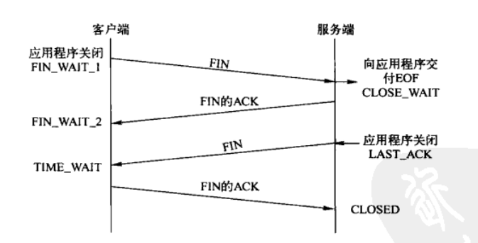
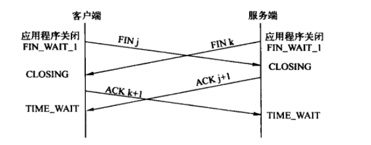
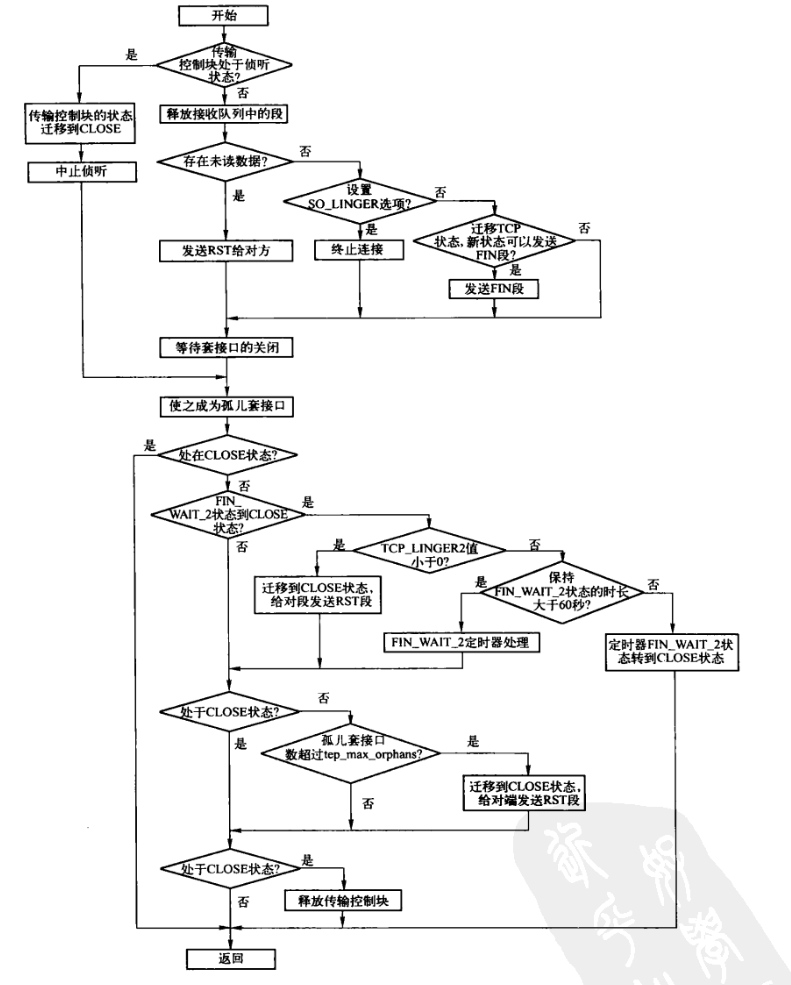
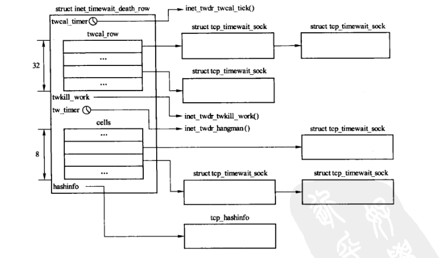
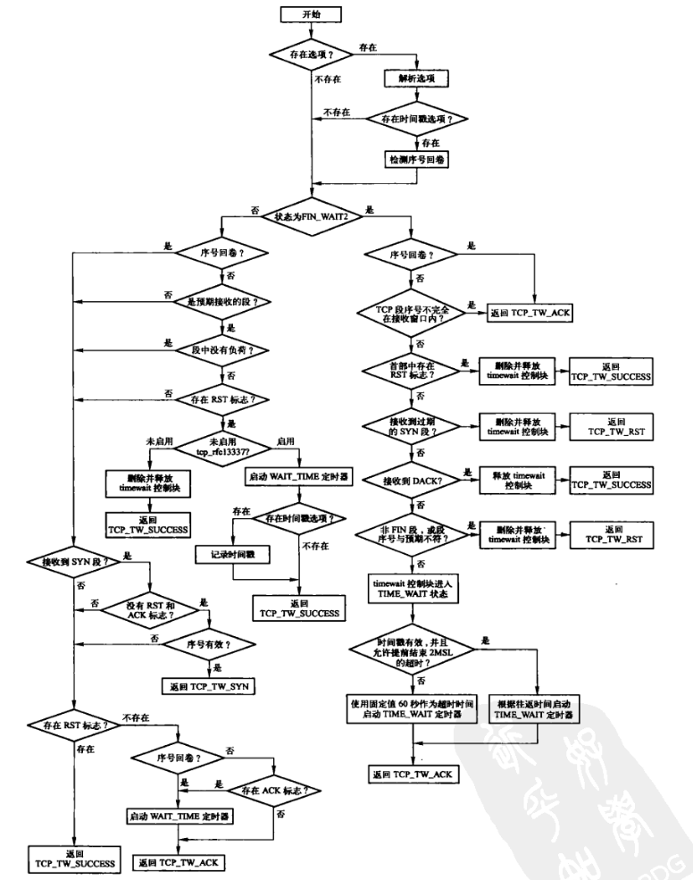

TCP连接的终止
Table of Contents
TIME_WAIT状态也称为2MSL等待状态。每个具体的TCP实现必须选择一个段的最大生存时间MSL,它是任何段被丢弃前在网络中逗留的最长时间。这个时间是有限的，因为TCP段以IP数据报的形式在网络内传输，而IP数据报有限制其生存时间的TTL字段。RFC793指出MSL为2min。然而，在Linux实现中的默认值为1min。
在连接处于2MSL等待时，此时接收到的段都被丢弃，处于2MSL等待期间的连接不能再被使用。服务端通常执行被动关闭，不会进入TIME_WAIT状态。这意味着如果终止一个客户端程序，有立即重新启动该客户端，则心客户端进程不能重用相同的本地端口。
对于服务器来说，服务器使用知名端口。如果终止一个已建立连接的服务端程序，并试图重新启动该服务端程序，则新服务进程不能使用该知名端口，因为该端口处于2MSL期间。
在FIN_WAIT_2状态时，已经发出FIN，且另一端已经确认该FIN。除非是半关闭，否则将等待另一端的应用层意识到它已收到文件结束符，并向本端发送一个FIN来关闭另一个方向的连接，只有当另一端进程完成这种关闭，本端才会从FIN_WAIT_2状态进入TIME_WAIT状态。
这意味着本端有可能永远保持在FIN_WAIT_2状态，而另一端也将处于CLOSE_WAIT状态，并保持该状态知道应用层决定关闭。
可以采用如下方式防止这种在FIN_WAIT_2状态无限等待的情况：如果执行主动关闭的应用层进行全关闭，而不是半关闭，则说明其还想接收数据，此时设置一个定时器，一旦该连接空闲时间达到11min 15s，TCP即进入CLOSED状态。
大多数传输控制块主动关闭时都会经历TIME_WAIT状态，如果每个控制块都是用一个定时器处理，在系统存在很多短连接时，2MSL等待超时时间确实准确了，但由于使用了太多定时器，会严重影响系统性能。
为了在这两者之间达到平衡，在处理2MSL等待超时时间使用了多种算法，根据2MSL等待超时是否少于60s，而使用2MSL等待超时时间较短的超时方式处理，或者使用2MSL等待超时时间较长的方式处理。
对于2MSL等待超时较短的情况，用timewait控制块的2MSL等待超时时间除以INET_TWDR_RECYCLE_SLOTS后向上取整得到的值，作为添加到twcal_row散列表的关键字。在新的timewait控制块添加到twcal_row散列表时，将twcal_timer定时器设置为timewait控制块中最短2MSL超时时间，同时设置遍历twcal_row散列表入口，即存放timewait控制块2MSL最早超时的链表入口。在twcal_timer定时器超时之后，会从之前保存的入口开始遍历twcal_row散列表，删除全部timewait控制块。
对于2MSL等待超时时间较长的情况，使用了一个定时器，定时器的超时时间为TCP_TIMEWAIT_LEN/INET_TWDR_TWKILL_SLOTS，即超时8次的时间为60s。然后用套接口2MSL等待超时时间除以定时器超时时间后线上取整，作为处理该timewait控制块徐经理定时器超时的次数，也就是相对于当前超时处理slot的偏移。例如，timewait控制块2MSL等待超时时间为42s，当前超时处理slot为5，则得到需要经理定时器超时的次数为6，因此该控制块添加到cells散列表的slot应该为3，经历6次tw_timer定时器超时后，会处理该控制块。
1 连接终止过程
由于TCP存在半关闭状态，因此终止一个连接需要经过4次挥手。TCP连接是全双工的，即发送数据的同时也能接收数据，所以关闭连接时两个方向都必须单独进行，当一端完成其数据发送任务后，应用层即可调用close()发送一个FIN来终止该方向上的连接，当另一端收到这个FIN后，必须通知应用层另一端已经终止了数据发送。
1.1 正常关闭
一端收到一个FIN，只意味着该段输入方向上不会再有数据流，但仍向其可以发送数据。尽管在实际应用中很少有应用这么做，但是利用半关闭的应用还是可以的。

Figure 1: 正常关闭的段交换和对应的状态
先关闭的一方，即发送第一个FIN的一方执行主动关闭; 另一方执行被动关闭。
服务端TCP收到FIN后，会向客户端发送一个ACK,同时向应用程序传送一个文件结束符。接着该服务器程序关闭连接，引发服务端TCP向客户端发送FIN，而客户端必须发回一个确认。
1.2 同时关闭
在正常关闭中，一端发送第一个FIN执行主动关闭。也有可能双方同时执行主动关闭。
两端同时发送关闭命令时，两端TCP状态均从ESTABLISHED变为FIN_WAIT_1。这将导致双方各发送一个FIN，两个FIN经过网络传送后分别到达另一端。接收到FIN后，状态由FIN_WAIT_1迁移到CLOSING，并发送最后的ACK。收到最后的ACK后，状态变为TIME_WAIT。

Figure 2: 同时关闭的段交换和对应的状态
2 shutdown传输接口层实现
2.1 tcp_shutdown()
该函数是TCP的shutdown系统调用的传输接口层实现，由inet_shutdown()调用。
/* * Shutdown the sending side of a connection. Much like close except * that we don't receive shut down or set_sock_flag(sk, SOCK_DEAD). */ void tcp_shutdown(struct sock *sk, int how) { /* We need to grab some memory, and put together a FIN, * and then put it into the queue to be sent. * Tim MacKenzie(tym@dibbler.cs.monash.edu.au) 4 Dec '92. */ /** 接收方向的关闭，则无需发送fin,因为可能还需要向对方发送数据的能力。 对于接收方向的关闭，在recvmsg系统调用中，如果发现设置了RCV_SHUTDOWN标志时会立即返回*/ if (!(how & SEND_SHUTDOWN)) return; //发送方向的关闭 /* If we've already sent a FIN, or it's a closed state, skip this. */ if ((1 << sk->sk_state) & (TCPF_ESTABLISHED | TCPF_SYN_SENT | TCPF_SYN_RECV | TCPF_CLOSE_WAIT)) { /* Clear out any half completed packets. FIN if needed. */ if (tcp_close_state(sk)) //设置新的状态 tcp_send_fin(sk); //需要时发送fin } }
2.2 tcp_send_fin()
实现过程如下：
- 发送FIN无需占用额外负载，因此如果发送队列不为空，则在发送队列的最后一个TCP段上设置FIN标志。但是FIN会占用一个序号，因此需要递增序号。
- 如果发送队列为空，则需要构造一个新的TCP段，该TCP段不需要负荷，只需要TCP首部即可。
- 最后关闭Nagle算法，立即将发送队列上的为发送的段全部发送。
3 close传输接口层的实现：tcp_close()
tcp_close()是TCP的close系统调用的传输接口层实现，由inet_release()调用。

Figure 3: tcp_close流程图
void tcp_close(struct sock *sk, long timeout) //还可以发送数据的剩余时间 { struct sk_buff *skb; int data_was_unread = 0; int state; lock_sock(sk); sk->sk_shutdown = SHUTDOWN_MASK; //表示双向关闭 if (sk->sk_state == TCP_LISTEN) { //处于listen,则无需发送FIN tcp_set_state(sk, TCP_CLOSE); //设置为CLOSE /* Special case. */ /** 终止监听的过程如下： + 停止sk_timer定时器，根据当前的状态来终止连接定时器、 FIN_WAIT_2定时器或TCP保活定时器 + 删除并释放TCP传输控制块中处于半连接状态的连接请求块 + 调用disconnect的传输接口层实现tcp_disconnect()断开已经建立连接， 但是未被accept的传输控制块，并删除。同时删除已接收到接收队列（包括失序队列）的段 */ inet_csk_listen_stop(sk); //停止监听 goto adjudge_to_death; } /* We need to flush the recv. buffs. We do this only on the * descriptor close, not protocol-sourced closes, because the * reader process may not have drained the data yet! */ //释放接收队列的段 while ((skb = __skb_dequeue(&sk->sk_receive_queue)) != NULL) { u32 len = TCP_SKB_CB(skb)->end_seq - TCP_SKB_CB(skb)->seq - skb->h.th->fin; data_was_unread += len; //统计释放长度 __kfree_skb(skb); } //回收缓存 sk_stream_mem_reclaim(sk); /* As outlined in draft-ietf-tcpimpl-prob-03.txt, section * 3.10, we send a RST here because data was lost. To * witness the awful effects of the old behavior of always * doing a FIN, run an older 2.1.x kernel or 2.0.x, start * a bulk GET in an FTP client, suspend the process, wait * for the client to advertise a zero window, then kill -9 * the FTP client, wheee... Note: timeout is always zero * in such a case. *//** 如果断开连接时，存在未读数据，则发送RST,而非FIN*/ if (data_was_unread) { /* Unread data was tossed, zap the connection. */ NET_INC_STATS_USER(LINUX_MIB_TCPABORTONCLOSE); tcp_set_state(sk, TCP_CLOSE); tcp_send_active_reset(sk, GFP_KERNEL); } else if (sock_flag(sk, SOCK_LINGER) && !sk->sk_lingertime) {/** 如果设置了SO_LINGER选项，但延时时间为0, 则调用disconnect断开并删除 已建立连接但未被accept的传输控制块，同时删除已接收到接收队列上的段， 以及发送队列上的段*/ /* Check zero linger _after_ checking for unread data. */ sk->sk_prot->disconnect(sk, 0); //tcp_disconnect() NET_INC_STATS_USER(LINUX_MIB_TCPABORTONDATA); } else if (tcp_close_state(sk)) { /** 其他情况，进行状态转换， 如果转换后是TCP_ACTION_FIN, 则发送FIN段*/ /* We FIN if the application ate all the data before * zapping the connection. */ /* RED-PEN. Formally speaking, we have broken TCP state * machine. State transitions: * * TCP_ESTABLISHED -> TCP_FIN_WAIT1 * TCP_SYN_RECV -> TCP_FIN_WAIT1 (forget it, it's impossible) * TCP_CLOSE_WAIT -> TCP_LAST_ACK * * are legal only when FIN has been sent (i.e. in window), * rather than queued out of window. Purists blame. * * F.e. "RFC state" is ESTABLISHED, * if Linux state is FIN-WAIT-1, but FIN is still not sent. * * The visible declinations are that sometimes * we enter time-wait state, when it is not required really * (harmless), do not send active resets, when they are * required by specs (TCP_ESTABLISHED, TCP_CLOSE_WAIT, when * they look as CLOSING or LAST_ACK for Linux) * Probably, I missed some more holelets. * --ANK */ tcp_send_fin(sk); } //发送RST或FIN后，等待套接口的关闭，直到TCP状态为FIN_WAIT_1 CLOSING LAST_ACK或超时 sk_stream_wait_close(sk, timeout); adjudge_to_death: /** 以下设置为DEAD状态，成为孤儿套接口*/ state = sk->sk_state; sock_hold(sk); sock_orphan(sk); atomic_inc(sk->sk_prot->orphan_count); //真正关闭前，处理后备队列的段 /* It is the last release_sock in its life. It will remove backlog. */ release_sock(sk); /* Now socket is owned by kernel and we acquire BH lock to finish close. No need to check for user refs. *///关闭传输控制块前，禁止下半部 local_bh_disable(); bh_lock_sock(sk); //锁定传输控制块 BUG_TRAP(!sock_owned_by_user(sk)); /* Have we already been destroyed by a softirq or backlog? */ if (state != TCP_CLOSE && sk->sk_state == TCP_CLOSE) //如果传输控制块状态为CLOSE,则无需处理 goto out; /* This is a (useful) BSD violating of the RFC. There is a * problem with TCP as specified in that the other end could * keep a socket open forever with no application left this end. * We use a 3 minute timeout (about the same as BSD) then kill * our end. If they send after that then tough - BUT: long enough * that we won't make the old 4*rto = almost no time - whoops * reset mistake. * * Nope, it was not mistake. It is really desired behaviour * f.e. on http servers, when such sockets are useless, but * consume significant resources. Let's do it with special * linger2 option. --ANK */ //FIN_WAIT_2状态到CLOSE状态的转换 if (sk->sk_state == TCP_FIN_WAIT2) { struct tcp_sock *tp = tcp_sk(sk); if (tp->linger2 < 0) { //表示FIN_WAIT_2到CLOSE的转换无需等待 tcp_set_state(sk, TCP_CLOSE); tcp_send_active_reset(sk, GFP_ATOMIC); //发送RST NET_INC_STATS_BH(LINUX_MIB_TCPABORTONLINGER); } else {/** 否则 根据tcp_fin_timeout()和往返时间获取需要保持在FIN_WAIT_2状态的时长 */ const int tmo = tcp_fin_time(sk); //大于60s，则需要用FIN_WAIT_2定时器处理 if (tmo > TCP_TIMEWAIT_LEN) { inet_csk_reset_keepalive_timer(sk, tmo - TCP_TIMEWAIT_LEN); } else {/** 否则通过tcp_time_wait由timewait控制块取代tcp_sock传输控制块， 从FIN_WAIT_2转换到CLOSE*/ tcp_time_wait(sk, TCP_FIN_WAIT2, tmo); goto out; } } } /** 如果此时没有处于CLOSE状态，则需检测当前孤儿套接口数量和发送队列中段的总长度*/ if (sk->sk_state != TCP_CLOSE) { sk_stream_mem_reclaim(sk); //如果孤儿套接口超过系统配置或者 if (atomic_read(sk->sk_prot->orphan_count) > sysctl_tcp_max_orphans || //发送队列中所有段的数据总长度超过发送缓冲区长度上限的最小值，并且 (sk->sk_wmem_queued > SOCK_MIN_SNDBUF && //当前整个TCP传输层缓冲区所分配的内存超过缓冲区可用大小的最高硬性限制 atomic_read(&tcp_memory_allocated) > sysctl_tcp_mem[2])) { if (net_ratelimit()) printk(KERN_INFO "TCP: too many of orphaned " "sockets\n"); tcp_set_state(sk, TCP_CLOSE); //立即关闭 tcp_send_active_reset(sk, GFP_ATOMIC); //发送RST NET_INC_STATS_BH(LINUX_MIB_TCPABORTONMEMORY); } } if (sk->sk_state == TCP_CLOSE) //如果此时TCP状态为CLOSE，则释放传输控制块及其占用资源 inet_csk_destroy_sock(sk); /* Otherwise, socket is reprieved until protocol close. */ out: bh_unlock_sock(sk); local_bh_enable(); sock_put(sk); }
4 被动关闭：FIN段的接收处理
ESTABLISHED状态下接收的TCP段都由tcp_rcv_establised()来处理，因此FIN段也要做首部预测，当然预测不会通过，然后FIN走慢速路径处理。
慢速路径中，首先进行TCP选项处理，再根据段的序号检测该FIN段是否是期望接收的段。是则调用tcp_fin()处理，不是说明TCP传输过程中出现失序，因此将该FIN缓存到乱序队列，等前面的段到齐后在处理。

Figure 4: FIN段接收处理流程
FIN经过首部预测，走慢速路径，由tcp_data_queue()处理。如果FIN是预期的段，则由tcp_fin处理，否则暂存到乱序队列。
/* * Process the FIN bit. This now behaves as it is supposed to work * and the FIN takes effect when it is validly part of sequence * space. Not before when we get holes. * * If we are ESTABLISHED, a received fin moves us to CLOSE-WAIT * (and thence onto LAST-ACK and finally, CLOSE, we never enter * TIME-WAIT) * * If we are in FINWAIT-1, a received FIN indicates simultaneous * close and we go into CLOSING (and later onto TIME-WAIT) * * If we are in FINWAIT-2, a received FIN moves us to TIME-WAIT. */ static void tcp_fin(struct sk_buff *skb, struct sock *sk, struct tcphdr *th) { struct tcp_sock *tp = tcp_sk(sk); //收到FIN,需要调度发送ACK inet_csk_schedule_ack(sk); //表示不允许继续接收数据 sk->sk_shutdown |= RCV_SHUTDOWN; sock_set_flag(sk, SOCK_DONE); //表示TCP会话即将结束 switch (sk->sk_state) { case TCP_SYN_RECV: case TCP_ESTABLISHED: //设置CLOSE_WAIT，并确定延时发送ACK /* Move to CLOSE_WAIT */ tcp_set_state(sk, TCP_CLOSE_WAIT); inet_csk(sk)->icsk_ack.pingpong = 1; break; case TCP_CLOSE_WAIT: //收到FIN,则认为FIN是重复接收的 case TCP_CLOSING: //忽略，该状态在等待ACK /* Received a retransmission of the FIN, do * nothing. */ break; case TCP_LAST_ACK: /* RFC793: Remain in the LAST-ACK state. */ break; case TCP_FIN_WAIT1: //需要发送ACK,并进入CLOSING并等待ACK /* This case occurs when a simultaneous close * happens, we must ack the received FIN and * enter the CLOSING state. */ tcp_send_ack(sk); tcp_set_state(sk, TCP_CLOSING); break; case TCP_FIN_WAIT2: //发送ACK,并进入TIME_WAIT /* Received a FIN -- send ACK and enter TIME_WAIT. */ tcp_send_ack(sk); tcp_time_wait(sk, TCP_TIME_WAIT, 0); break; default: //LISTEN和CLOSE状态忽略FIN /* Only TCP_LISTEN and TCP_CLOSE are left, in these * cases we should never reach this piece of code. */ printk(KERN_ERR "%s: Impossible, sk->sk_state=%d\n", __FUNCTION__, sk->sk_state); break; }; /* It _is_ possible, that we have something out-of-order _after_ FIN. * Probably, we should reset in this case. For now drop them. */ __skb_queue_purge(&tp->out_of_order_queue); //清空乱序队列 if (tp->rx_opt.sack_ok) //清除SACK tcp_sack_reset(&tp->rx_opt); sk_stream_mem_reclaim(sk); //释放已接收到接收队列的段 if (!sock_flag(sk, SOCK_DEAD)) { //如果此时没有处于DEAD状态，则唤醒进程 sk->sk_state_change(sk); /* Do not send POLL_HUP for half duplex close. */ if (sk->sk_shutdown == SHUTDOWN_MASK || //如果双向关闭 sk->sk_state == TCP_CLOSE) //或者处于CLOSE sk_wake_async(sk, 1, POLL_HUP); //则唤醒异步等待的进程，通知连接已经终止 else //否则，通知连接可以进行读写操作 sk_wake_async(sk, 1, POLL_IN); } }
5 主动关闭
5.1 timewait控制块的数据结构
5.1.1 inet_inetwawit_death_row结构
在TCP连接的终止过程中，为了方便管理相关的数据，所有的timewait控制块和参数等都存放在inet_timetwait_death_row结构中集中管理，TCP的实例为tcp_death_row,其中包含用于存储timewait控制块的散列表和相应的定时器等。结构如下图，其中twcal_row散列表和cells散列表中都存储着三个timewait控制块。

Figure 5: inet_timewait_death_row结构
struct inet_timewait_death_row { /* Short-time timewait calendar */ /** 2MSL（等待超时）时间较短成员变量 */ /* 初始值为-1，表示twcal_time定时器未使用过，或者使用后已经删除。 不为-1时，表示当前正使用的slot，作为每次遍历twcal_row散列表的入口。 因此在设置超时时间，启动定时器后，将其设置为0，表示已开始使用*/ int twcal_hand; /* twcal_timer定时器超时时间，是清除timewait控制块的阀门*/ int twcal_jiffie; /* twcal_timer的超时处理函数是inet_twdr_twcal_tick()，该函数扫描整个twcal_row, 删除所有的超时twsk，对剩下的twsk重新设定超时时间*/ struct timer_list twcal_timer; /* 用于存储2MSL（等待超时）时间较短的tinewait控制块的散列表 */ struct hlist_head twcal_row[INET_TWDR_RECYCLE_SLOTS]; /** 2MSL（等待超时）时间较长的成员变量 */ /* tw_timer定时器的超时时间为TCP_TIMEWAIT_LEN/INET_TWDR_TWKILL_SLOTS， 即将60s分成8份。*/ int period; /* 分批删除并释放cells散列表中的timewait控制块时，用于表示待删除slot的位图。*/ u32 thread_slots; /* 进行分批删除并释放cells散列表中的timewait控制块的工作队列 */ struct work_struct twkill_work; /* tw_timer的超时处理函数是inet_twdr_hangman()，每过一个period超时一次， 取cells中对应的队列，删除队列中所有的twsk，同时从ehash散列表的后半部分和 bhash散列表中删除相应的twsk及绑定的本地端口。*/ struct timer_list tw_timer; /* tw_timer定时器超时时正使用的slot,作为cells散列表的关键字*/ int slot; /* 用于存储2MSL等待超时时间较长的timewait控制块的散列表*/ struct hlist_head cells[INET_TWDR_TWKILL_SLOTS]; /** 其他特性的成员变量*/ /* 用于同步访问twcal_row和cells散列表的自旋锁*/ spinlock_t death_lock; /* 当前系统中处于TIME_WAIT状态的套接口数。该值不会超过系统参数tcp_max_tw_buckets*/ int tw_count; /* 指向inet_hashinfo结构类型实例tcp_hashinfo */ struct inet_hashinfo *hashinfo; /* 用来存储系统参数tcp_tw_recycle的值*/ int sysctl_tw_recycle; /* 用来存储系统参数tcp_max_tw_buckets的值 */ int sysctl_max_tw_buckets; };
5.1.2 inet_timewait_sock结构
inet_timewait_sock结构用于组成tcp_timewait_sock结构，同时其前部也是由sock_common结构组成的。由于tcp_sock结构前部也是由sock_common结构组成,因此，在访问sock_common结构的成员时，可以不加区分。
/* * This is a TIME_WAIT sock. It works around the memory consumption * problems of sockets in such a state on heavily loaded servers, but * without violating the protocol specification. */ struct inet_timewait_sock { /* * Now struct sock also uses sock_common, so please just * don't add nothing before this first member (__tw_common) --acme *///前部由sock_common结构组成 struct sock_common __tw_common; #define tw_family __tw_common.skc_family #define tw_state __tw_common.skc_state #define tw_reuse __tw_common.skc_reuse #define tw_bound_dev_if __tw_common.skc_bound_dev_if #define tw_node __tw_common.skc_node #define tw_bind_node __tw_common.skc_bind_node #define tw_refcnt __tw_common.skc_refcnt #define tw_hash __tw_common.skc_hash #define tw_prot __tw_common.skc_prot /* 由于TCP状态迁移到FIN_WAIT_2或者TIME_WAIT状态时，都需要由定时器来处理， 一旦超时套接口随即就被释放。一旦用timewait控制块取代tcp_sock传输控制块后， 其对外的状态是TIME_WAIT，而内部状态还是有区别的，因此需要用tw_substate来标识 FIN_WAIT2或TIME_WAIT*/ volatile unsigned char tw_substate; /* 3 bits hole, try to pack */ unsigned char tw_rcv_wscale; /* Socket demultiplex comparisons on incoming packets. */ /* these five are in inet_sock */ __be16 tw_sport; __be32 tw_daddr __attribute__((aligned(INET_TIMEWAIT_ADDRCMP_ALIGN_BYTES))); __be32 tw_rcv_saddr; __be16 tw_dport; __u16 tw_num; /* And these are ours. */ __u8 tw_ipv6only:1; /* 15 bits hole, try to pack */ __u16 tw_ipv6_offset; /* 用于记录2MSL超时时间*/ int tw_timeout; /* 本timewait控制块超时删除的时间（单位Hz）,供proc文件系统使用*/ unsigned long tw_ttd; /* 指向绑定的本地端口信息，由对应的TCP传输控制块的icsk_bind_hash成员得到*/ struct inet_bind_bucket *tw_tb; /* 用来在twcal_row和cells散列表中构成链表 */ struct hlist_node tw_death_node; };
5.1.3 tcp_timewait_sock结构
当TCP状态迁移到FIN_WAIT2或TIME_WAIT状态时，会创建timewait控制块替换tcp_sock传输控制块。替换后的timewait控制块同样会存储在tcp_hashinfo的ehash散列表中，直到2MSL超时或提前释放为止。
struct tcp_timewait_sock { struct inet_timewait_sock tw_sk; /* 以下成员与tcp_sock结构的对应成员意义相同，这些成员的值都是在创建 tcp_timewait_sock实例时从tcp_sock结构中获取*/ u32 tw_rcv_nxt; u32 tw_snd_nxt; u32 tw_rcv_wnd; u32 tw_ts_recent; long tw_ts_recent_stamp; };
5.2 timewait控制块取代TCP传输控制块
当TCP传输控制块处于FIN_WAIT2状态且延时60s以后的部分时，或者处于TIME_WAIT状态时，才由timewait控制块取代TCP传输控制块，来处理FIN_WAIT_2状态或者TIME_WAIT状态。 由于在这两种状态下，是不处理TCP段的数据，因此从效率和资源方面考虑，完全可以用一个较小的timewait控制块来替代正常的TCP传输控制块，这个过程由tcp_time_wait()来实现。
/* * Move a socket to time-wait or dead fin-wait-2 state. */ void tcp_time_wait(struct sock *sk, //被取代的传输控制块 int state, //timewait控制块内部的状态，为FIN_WAIT2或者TIME_WAIT int timeo) //等待超时时间 { struct inet_timewait_sock *tw = NULL; const struct inet_connection_sock *icsk = inet_csk(sk); const struct tcp_sock *tp = tcp_sk(sk); int recycle_ok = 0; //如果启用tw_recycle,且ts_recent_stamp有效，则记录相关时间戳信息到对端信息管理块中。 if (tcp_death_row.sysctl_tw_recycle && tp->rx_opt.ts_recent_stamp) recycle_ok = icsk->icsk_af_ops->remember_stamp(sk); //如果当前系统中的TIME_WAIT状态的套接口数没有达到最大值，则允许分配timewait控制块 if (tcp_death_row.tw_count < tcp_death_row.sysctl_max_tw_buckets) tw = inet_twsk_alloc(sk, state); //分配timewait控制块，并根据传输控制块设置对应属性和内部状态 if (tw != NULL) { struct tcp_timewait_sock *tcptw = tcp_twsk((struct sock *)tw); //根据超时重传时间计算TIME_WAIT状态的超时时间，后者是前者的3.5倍 const int rto = (icsk->icsk_rto << 2) - (icsk->icsk_rto >> 1); //从TCP控制块获取相应的属性设置到timewait控制块中 tw->tw_rcv_wscale = tp->rx_opt.rcv_wscale; tcptw->tw_rcv_nxt = tp->rcv_nxt; tcptw->tw_snd_nxt = tp->snd_nxt; tcptw->tw_rcv_wnd = tcp_receive_window(tp); tcptw->tw_ts_recent = tp->rx_opt.ts_recent; tcptw->tw_ts_recent_stamp = tp->rx_opt.ts_recent_stamp; #if defined(CONFIG_IPV6) || defined(CONFIG_IPV6_MODULE) if (tw->tw_family == PF_INET6) { struct ipv6_pinfo *np = inet6_sk(sk); struct inet6_timewait_sock *tw6; tw->tw_ipv6_offset = inet6_tw_offset(sk->sk_prot); tw6 = inet6_twsk((struct sock *)tw); ipv6_addr_copy(&tw6->tw_v6_daddr, &np->daddr); ipv6_addr_copy(&tw6->tw_v6_rcv_saddr, &np->rcv_saddr); tw->tw_ipv6only = np->ipv6only; } #endif #ifdef CONFIG_TCP_MD5SIG /* * The timewait bucket does not have the key DB from the * sock structure. We just make a quick copy of the * md5 key being used (if indeed we are using one) * so the timewait ack generating code has the key. */ do { struct tcp_md5sig_key *key; memset(tcptw->tw_md5_key, 0, sizeof(tcptw->tw_md5_key)); tcptw->tw_md5_keylen = 0; key = tp->af_specific->md5_lookup(sk, sk); if (key != NULL) { memcpy(&tcptw->tw_md5_key, key->key, key->keylen); tcptw->tw_md5_keylen = key->keylen; if (tcp_alloc_md5sig_pool() == NULL) BUG(); } } while(0); #endif /* Linkage updates. */ /** 将timewait控制块添加到tcp_hashinfo的ehash散列表，将被替代的tcp控制块 从ehash散列表删除，这样FIN_WAIT2和TIME_WAIT状态下也可以进行输入的处理。 他偶你是将该timewait控制块添加到bhash散列表，但并不删除该散列表中被替代的 TCP控制块，因为只要inet->num不为0,这个绑定关系就存在，即使该套接口已经关闭*/ __inet_twsk_hashdance(tw, sk, &tcp_hashinfo); /* Get the TIME_WAIT timeout firing. */ if (timeo < rto) //TIME_WAIT的超时时间不得小于3.5被的超时重传时间 timeo = rto; /** 如果成功将相关的时间戳信息添加到对端信息管理块中，则TIME_WAIT的超时时间设置 为3.5倍的往返时间，否则设置为60s*/ if (recycle_ok) { tw->tw_timeout = rto; } else { tw->tw_timeout = TCP_TIMEWAIT_LEN; if (state == TCP_TIME_WAIT) timeo = TCP_TIMEWAIT_LEN; } /**进入TIME_WAIT状态并启动TIME_WAIT定时器*/ inet_twsk_schedule(tw, &tcp_death_row, timeo, TCP_TIMEWAIT_LEN); inet_twsk_put(tw); } else { /* Sorry, if we're out of memory, just CLOSE this * socket up. We've got bigger problems than * non-graceful socket closings. */ LIMIT_NETDEBUG(KERN_INFO "TCP: time wait bucket table overflow\n"); } //将TCP中的一些测量值更新到其路由缓存项的度量值中，并关闭释放传输控制块 tcp_update_metrics(sk); tcp_done(sk); }
5.3 启动FIN_WAIT2或TIME_WAIT定时器
inet_twsk_sckedule()用于启动FIN_WAIT2或TIME_WAIT定时器。虽然启动这两个定时器用的同一个接口，但是根据timewait控制块的tw_substate很明确地区别当前启动的是哪个定时器。
void inet_twsk_schedule(struct inet_timewait_sock *tw, //已替代TCP控制块的timewait控制块 struct inet_timewait_death_row *twdr, //管理相关的数据的容器，通常传入全局变量tcp_death_row const int timeo, //设定定时器的超时时间 const int timewait_len) //超时时间上限，为TCP_TIMEWAIT_LEN. { struct hlist_head *list; int slot; /* timeout := RTO * 3.5 * * 3.5 = 1+2+0.5 to wait for two retransmits. * * RATIONALE: if FIN arrived and we entered TIME-WAIT state, * our ACK acking that FIN can be lost. If N subsequent retransmitted * FINs (or previous seqments) are lost (probability of such event * is p^(N+1), where p is probability to lose single packet and * time to detect the loss is about RTO*(2^N - 1) with exponential * backoff). Normal timewait length is calculated so, that we * waited at least for one retransmitted FIN (maximal RTO is 120sec). * [ BTW Linux. following BSD, violates this requirement waiting * only for 60sec, we should wait at least for 240 secs. * Well, 240 consumes too much of resources 8) * ] * This interval is not reduced to catch old duplicate and * responces to our wandering segments living for two MSLs. * However, if we use PAWS to detect * old duplicates, we can reduce the interval to bounds required * by RTO, rather than MSL. So, if peer understands PAWS, we * kill tw bucket after 3.5*RTO (it is important that this number * is greater than TS tick!) and detect old duplicates with help * of PAWS. */ /* TIME_WAIT超时时间除以INET_TWDR_RECYCLE_TICK后向上取整，用来判断将该 timewait控制块添加到cells还是twcal_row散列表中。 如果得到的值大于或等于INET_TWDR_RECYCLE_SLOTS,则将其添加到cells散列表中， 否则添加到twcal_row散列表*/ slot = (timeo + (1 << INET_TWDR_RECYCLE_TICK) - 1) >> INET_TWDR_RECYCLE_TICK; spin_lock(&twdr->death_lock); /* Unlink it, if it was scheduled */ /* 如果该timewait控制块已经被调度，则从散列表摘除。并递减当前系统中处于TIME_WAIT 状态的套接口数。*/ if (inet_twsk_del_dead_node(tw)) twdr->tw_count--; else atomic_inc(&tw->tw_refcnt); //准备添加到cells散列表。设置timewait控制块超时删除时间，并计算添加到cells散列表桶的位置 if (slot >= INET_TWDR_RECYCLE_SLOTS) { /* Schedule to slow timer */ if (timeo >= timewait_len) { slot = INET_TWDR_TWKILL_SLOTS - 1; } else { slot = (timeo + twdr->period - 1) / twdr->period; if (slot >= INET_TWDR_TWKILL_SLOTS) slot = INET_TWDR_TWKILL_SLOTS - 1; } tw->tw_ttd = jiffies + timeo; slot = (twdr->slot + slot) & (INET_TWDR_TWKILL_SLOTS - 1); list = &twdr->cells[slot]; } else {/* 准备添加到twcal_row散列表，如果twcal_row散列表为空，则先设置下次超时处理的桶， 然后设置超时时间后启动定时器。 如果twcal散列表不为空，且本次超时时间早于该定时器的超时时间，则需重新设置定时器超时时间。 最后获取添加到twcal_row散列表的哪个桶*/ tw->tw_ttd = jiffies + (slot << INET_TWDR_RECYCLE_TICK); if (twdr->twcal_hand < 0) { twdr->twcal_hand = 0; twdr->twcal_jiffie = jiffies; twdr->twcal_timer.expires = twdr->twcal_jiffie + (slot << INET_TWDR_RECYCLE_TICK); add_timer(&twdr->twcal_timer); } else { if (time_after(twdr->twcal_timer.expires, jiffies + (slot << INET_TWDR_RECYCLE_TICK))) mod_timer(&twdr->twcal_timer, jiffies + (slot << INET_TWDR_RECYCLE_TICK)); slot = (twdr->twcal_hand + slot) & (INET_TWDR_RECYCLE_SLOTS - 1); } list = &twdr->twcal_row[slot]; } //将timewait控制块添加到相应的散列表。 hlist_add_head(&tw->tw_death_node, list); //如果之前不存在timewait控制块，则需设定tw_timer定时器 if (twdr->tw_count++ == 0) mod_timer(&twdr->tw_timer, jiffies + twdr->period); spin_unlock(&twdr->death_lock); }
5.4 CLOSE_WAIT、LAST_ACK、FIN_WAIT1、FIN_WAIT2与CLOSING状态处理
tcp_rcv_state_process()主要用于处理TCP状态为非ESTABLISHED和TIME_WAIT时接收到的段，由tcp_v4_do_rcv()调用。
/* * This function implements the receiving procedure of RFC 793 for * all states except ESTABLISHED and TIME_WAIT. * It's called from both tcp_v4_rcv and tcp_v6_rcv and should be * address independent. */ int tcp_rcv_state_process(struct sock *sk, struct sk_buff *skb, struct tcphdr *th, unsigned len) { struct tcp_sock *tp = tcp_sk(sk); struct inet_connection_sock *icsk = inet_csk(sk); int queued = 0; tp->rx_opt.saw_tstamp = 0; //...... /* step 5: check the ACK field */ if (th->ack) { //处理收到的ACK标志 int acceptable = tcp_ack(sk, skb, FLAG_SLOWPATH); switch(sk->sk_state) { //...... case TCP_FIN_WAIT1: /** 如果通过ACK的确认，所有发送段（包括FIN段）对方都已经收到， 则从FIN_WAIT1状态迁移到FIN_WAIT2状态，并关闭发送方向的连接*/ if (tp->snd_una == tp->write_seq) { tcp_set_state(sk, TCP_FIN_WAIT2); sk->sk_shutdown |= SEND_SHUTDOWN; //由于从对端收到ACK段，则可以确认该路由缓存有效 dst_confirm(sk->sk_dst_cache); /* 如果套接口不处于SOCK_DEAD状态，由于TCP状态发生变化，因此唤醒 等待该套接口的进程*/ if (!sock_flag(sk, SOCK_DEAD)) /* Wake up lingering close() */ sk->sk_state_change(sk); else { //处于SOCK_DEAD状态，则关闭传输控制块，或者在FIN_WAIT2状态等待 int tmo; //liger2小于0，则说明无需在FIN_WAIT2状态等待，直接关闭传输控制块 if (tp->linger2 < 0 || (TCP_SKB_CB(skb)->end_seq != TCP_SKB_CB(skb)->seq && after(TCP_SKB_CB(skb)->end_seq - th->fin, tp->rcv_nxt))) { tcp_done(sk); NET_INC_STATS_BH(LINUX_MIB_TCPABORTONDATA); return 1; } tmo = tcp_fin_time(sk); if (tmo > TCP_TIMEWAIT_LEN) { inet_csk_reset_keepalive_timer(sk, tmo - TCP_TIMEWAIT_LEN); } else if (th->fin || sock_owned_by_user(sk)) { /* Bad case. We could lose such FIN otherwise. * It is not a big problem, but it looks confusing * and not so rare event. We still can lose it now, * if it spins in bh_lock_sock(), but it is really * marginal case. */ inet_csk_reset_keepalive_timer(sk, tmo); } else { tcp_time_wait(sk, TCP_FIN_WAIT2, tmo); goto discard; } } } break; /** 通过ACK确认，所有的发送段（包括FIN段）对方都已经收到，则从CLOSING迁移到TIME_WAIT, 做2MSL超时等待*/ case TCP_CLOSING: if (tp->snd_una == tp->write_seq) { tcp_time_wait(sk, TCP_TIME_WAIT, 0); goto discard; } break; /** 如果通过ACK确认，所有的发送段（包括FIN段）对方都已经收到，则从LAST_ACK迁移到 CLOSE状态，把相关的metrics更新到目的路由项中，并关闭传输控制块*/ case TCP_LAST_ACK: if (tp->snd_una == tp->write_seq) { tcp_update_metrics(sk); tcp_done(sk); goto discard; } break; } } else goto discard; /* step 6: check the URG bit */ tcp_urg(sk, skb, th); //带外数据 /* step 7: process the segment text */ switch (sk->sk_state) { case TCP_CLOSE_WAIT: case TCP_CLOSING: case TCP_LAST_ACK: /** 如果这三种状态下收到已经确认过的段，直接丢弃，否则与FIN_WAIT1和FIN_WAIT2处理方式相同*/ if (!before(TCP_SKB_CB(skb)->seq, tp->rcv_nxt)) break; case TCP_FIN_WAIT1: case TCP_FIN_WAIT2: /* RFC 793 says to queue data in these states, * RFC 1122 says we MUST send a reset. * BSD 4.4 also does reset. *///如果接收方向已经关闭，又接收到新的数据，则回复RST段，通知接收方已经丢弃该数据 if (sk->sk_shutdown & RCV_SHUTDOWN) { if (TCP_SKB_CB(skb)->end_seq != TCP_SKB_CB(skb)->seq && after(TCP_SKB_CB(skb)->end_seq - th->fin, tp->rcv_nxt)) { NET_INC_STATS_BH(LINUX_MIB_TCPABORTONDATA); tcp_reset(sk); return 1; } } /* Fall through */ case TCP_ESTABLISHED: tcp_data_queue(sk, skb); queued = 1; break; } /* tcp_data could move socket to TIME-WAIT */ /* 如果TCP不处在CLOSE状态，则发送队列中的段，同时调度ACK,确定是立即发送ACK还是延时发送*/ if (sk->sk_state != TCP_CLOSE) { tcp_data_snd_check(sk, tp); tcp_ack_snd_check(sk); } if (!queued) { discard: __kfree_skb(skb); } return 0; }
5.5 FIN_WAIT2和TIME_WAIT状态的处理
5.5.1 TCP输入入口
tcp_v4_rcv()为TCP输入入口，下面的代码是在TIME_WAIT和FIN_WAIT2状态下处理接收到的TCP段。
/* * From tcp_input.c */ int tcp_v4_rcv(struct sk_buff *skb) { struct tcphdr *th; struct sock *sk; int ret; if (skb->pkt_type != PACKET_HOST) goto discard_it; /* Count it even if it's bad */ TCP_INC_STATS_BH(TCP_MIB_INSEGS); if (!pskb_may_pull(skb, sizeof(struct tcphdr))) goto discard_it; th = skb->h.th; if (th->doff < sizeof(struct tcphdr) / 4) goto bad_packet; if (!pskb_may_pull(skb, th->doff * 4)) goto discard_it; /* An explanation is required here, I think. * Packet length and doff are validated by header prediction, * provided case of th->doff==0 is eliminated. * So, we defer the checks. */ if ((skb->ip_summed != CHECKSUM_UNNECESSARY && tcp_v4_checksum_init(skb))) goto bad_packet; th = skb->h.th; TCP_SKB_CB(skb)->seq = ntohl(th->seq); TCP_SKB_CB(skb)->end_seq = (TCP_SKB_CB(skb)->seq + th->syn + th->fin + skb->len - th->doff * 4); TCP_SKB_CB(skb)->ack_seq = ntohl(th->ack_seq); TCP_SKB_CB(skb)->when = 0; TCP_SKB_CB(skb)->flags = skb->nh.iph->tos; TCP_SKB_CB(skb)->sacked = 0; sk = __inet_lookup(&tcp_hashinfo, skb->nh.iph->saddr, th->source, skb->nh.iph->daddr, th->dest, inet_iif(skb)); if (!sk) goto no_tcp_socket; process: if (sk->sk_state == TCP_TIME_WAIT) goto do_time_wait; //...... do_time_wait: /* 处理传输控制块为TIME_WAIT状态的情况，首先对段进行相关的校验 */ //查找IPSec策略数据库，如果失败则减少对该传输控制块的饮用后跳转到discard_it处丢弃报文 if (!xfrm4_policy_check(NULL, XFRM_POLICY_IN, skb)) { inet_twsk_put(inet_twsk(sk)); goto discard_it; } //检测段长度和校验和 if (skb->len < (th->doff << 2) || tcp_checksum_complete(skb)) { TCP_INC_STATS_BH(TCP_MIB_INERRS); inet_twsk_put(inet_twsk(sk)); //减少引用后，跳转到丢弃处 goto discard_it; } //处理在TIME_WAIT和FIN_WAIT2状态下接收到的段，并根据返回值处理 switch (tcp_timewait_state_process(inet_twsk(sk), skb, th)) { case TCP_TW_SYN: { /** 说明在TIME_WAIT状态下接收到了连接请求，并且可以接收该请求， 调用inet_lookup_listener根据目的地址和目的端口，在bhash散列表中查找对应的已绑定 端口并处于监听状态的传输控制块。如果查找命中，则释放timewait控制块，然后跳转到 process处进行正常连接请求处理*/ struct sock *sk2 = inet_lookup_listener(&tcp_hashinfo, skb->nh.iph->daddr, th->dest, inet_iif(skb)); if (sk2) { inet_twsk_deschedule(inet_twsk(sk), &tcp_death_row); inet_twsk_put(inet_twsk(sk)); sk = sk2; goto process; } /* Fall through to ACK */ } case TCP_TW_ACK: /** 调用tcp_v4_timewait_ack()发送相应的ACK*/ tcp_v4_timewait_ack(sk, skb); break; case TCP_TW_RST: /** 表示接收到了无效的段，需要给对端发送RST段。*/ goto no_tcp_socket; case TCP_TW_SUCCESS:; /** 不做任何处理*/ } goto discard_it; }
5.5.2 FIN_WAIT2和TIME_WAIT状态的输入处理
tcp_timewait_state_process()用于处理在FIN_WAIT2和TIME_WAIT状态下接收到的段。

Figure 6: tcp_timewait_state_process流程图
/* * * Main purpose of TIME-WAIT state is to close connection gracefully, * when one of ends sits in LAST-ACK or CLOSING retransmitting FIN * (and, probably, tail of data) and one or more our ACKs are lost. * * What is TIME-WAIT timeout? It is associated with maximal packet * lifetime in the internet, which results in wrong conclusion, that * it is set to catch "old duplicate segments" wandering out of their path. * It is not quite correct. This timeout is calculated so that it exceeds * maximal retransmission timeout enough to allow to lose one (or more) * segments sent by peer and our ACKs. This time may be calculated from RTO. * * When TIME-WAIT socket receives RST, it means that another end * finally closed and we are allowed to kill TIME-WAIT too. * * Second purpose of TIME-WAIT is catching old duplicate segments. * Well, certainly it is pure paranoia, but if we load TIME-WAIT * with this semantics, we MUST NOT kill TIME-WAIT state with RSTs. * * If we invented some more clever way to catch duplicates * (f.e. based on PAWS), we could truncate TIME-WAIT to several RTOs. * * The algorithm below is based on FORMAL INTERPRETATION of RFCs. * When you compare it to RFCs, please, read section SEGMENT ARRIVES * from the very beginning. * * NOTE. With recycling (and later with fin-wait-2) TW bucket * is _not_ stateless. It means, that strictly speaking we must * spinlock it. I do not want! Well, probability of misbehaviour * is ridiculously low and, seems, we could use some mb() tricks * to avoid misread sequence numbers, states etc. --ANK */ enum tcp_tw_status tcp_timewait_state_process(struct inet_timewait_sock *tw, //接收处理段的timewait控制块 struct sk_buff *skb, //FIN_WAIT2和TIME_WAIT状态下接收到的段 const struct tcphdr *th) { struct tcp_timewait_sock *tcptw = tcp_twsk((struct sock *)tw); struct tcp_options_received tmp_opt; int paws_reject = 0; tmp_opt.saw_tstamp = 0; //如果接收到的TCP段存在选项，则解析获取其中的选项。 if (th->doff > (sizeof(*th) >> 2) && tcptw->tw_ts_recent_stamp) { tcp_parse_options(skb, &tmp_opt, 0); //如果存在时间戳，则需要作序号回卷的检测，判断序号是否有效 if (tmp_opt.saw_tstamp) { tmp_opt.ts_recent = tcptw->tw_ts_recent; tmp_opt.ts_recent_stamp = tcptw->tw_ts_recent_stamp; paws_reject = tcp_paws_check(&tmp_opt, th->rst); } } //FIN_WAIT2状态的输入处理 if (tw->tw_substate == TCP_FIN_WAIT2) { /* Just repeat all the checks of tcp_rcv_state_process() */ /* Out of window, send ACK */ if (paws_reject || //如果TCP段的序号无效， /*或者TCP段序号不完全在接收窗口内，则返回TCP_TW_ACK， 表示需要给对端发送ACK */ !tcp_in_window(TCP_SKB_CB(skb)->seq, TCP_SKB_CB(skb)->end_seq, tcptw->tw_rcv_nxt, tcptw->tw_rcv_nxt + tcptw->tw_rcv_wnd)) return TCP_TW_ACK; //在FIN_WAIT2状态下接收到RST段，则跳转到kill处立即释放该timewait控制块 if (th->rst) goto kill; //如果接收到过期的SYN段，则跳转到kill_with_rst处释放该timewait控制块 if (th->syn && !before(TCP_SKB_CB(skb)->seq, tcptw->tw_rcv_nxt)) goto kill_with_rst; /* 如果接收到DACK,则释放该timewait控制块 */ if (!after(TCP_SKB_CB(skb)->end_seq, tcptw->tw_rcv_nxt) || TCP_SKB_CB(skb)->end_seq == TCP_SKB_CB(skb)->seq) { inet_twsk_put(tw); return TCP_TW_SUCCESS; } /* New data or FIN. If new data arrive after half-duplex close, * reset. *//*如果在FIN_WAIT2状态下接收到非FIN段，或接收到的段序号与预期不符， 则释放该timewait控制块 */ if (!th->fin || TCP_SKB_CB(skb)->end_seq != tcptw->tw_rcv_nxt + 1) { kill_with_rst: inet_twsk_deschedule(tw, &tcp_death_row); inet_twsk_put(tw); return TCP_TW_RST; } /** 如果接收到有效的FIN段，则timewait控制块进入TIME_WAIT状态， 同时设置时间戳相关属性*/ /* FIN arrived, enter true time-wait state. */ tw->tw_substate = TCP_TIME_WAIT; tcptw->tw_rcv_nxt = TCP_SKB_CB(skb)->end_seq; if (tmp_opt.saw_tstamp) { tcptw->tw_ts_recent_stamp = xtime.tv_sec; tcptw->tw_ts_recent = tmp_opt.rcv_tsval; } /* I am shamed, but failed to make it more elegant. * Yes, it is direct reference to IP, which is impossible * to generalize to IPv6. Taking into account that IPv6 * do not understand recycling in any case, it not * a big problem in practice. --ANK */ /** 如果时间戳有效，且允许提前结束2MSL的超时，则根据往返时间启动 TIME_WAIT定时器，否则使用固定值60s作为超时时间启动TIME_WAIT定时器*/ if (tw->tw_family == AF_INET && tcp_death_row.sysctl_tw_recycle && tcptw->tw_ts_recent_stamp && tcp_v4_tw_remember_stamp(tw)) inet_twsk_schedule(tw, &tcp_death_row, tw->tw_timeout, TCP_TIMEWAIT_LEN); else inet_twsk_schedule(tw, &tcp_death_row, TCP_TIMEWAIT_LEN, TCP_TIMEWAIT_LEN); return TCP_TW_ACK; //返回TCP_TW_ACK，表示要给对端发送ACK段 } /* * Now real TIME-WAIT state. * * RFC 1122: * "When a connection is [...] on TIME-WAIT state [...] * [a TCP] MAY accept a new SYN from the remote TCP to * reopen the connection directly, if it: * * (1) assigns its initial sequence number for the new * connection to be larger than the largest sequence * number it used on the previous connection incarnation, * and * * (2) returns to TIME-WAIT state if the SYN turns out * to be an old duplicate". */ /** TIME_WAIT状态预期段的输入处理 */ if (!paws_reject && (TCP_SKB_CB(skb)->seq == tcptw->tw_rcv_nxt && (TCP_SKB_CB(skb)->seq == TCP_SKB_CB(skb)->end_seq || th->rst))) { /* In window segment, it may be only reset or bare ack. */ /* 如果序号没有回卷，且正是预期接收的段，段中没有负荷或段中存在RST标志， 则作相应的处理。 为了防止TIME_WAIT assassination hazards问题，如果是RST段， 且tcp_rfc1337为0，则将丢弃在TIME_WAIT状态下收到的RST段，直接删除并释放 timewait控制块*/ if (th->rst) { /* This is TIME_WAIT assassination, in two flavors. * Oh well... nobody has a sufficient solution to this * protocol bug yet. */ if (sysctl_tcp_rfc1337 == 0) { kill: inet_twsk_deschedule(tw, &tcp_death_row); inet_twsk_put(tw); return TCP_TW_SUCCESS; } } /** 如果不丢弃TIME_WAIT状态下收到的RST段，则timewait控制块进入TIME_WAIT 等待阶段*/ inet_twsk_schedule(tw, &tcp_death_row, TCP_TIMEWAIT_LEN, TCP_TIMEWAIT_LEN); if (tmp_opt.saw_tstamp) { tcptw->tw_ts_recent = tmp_opt.rcv_tsval; tcptw->tw_ts_recent_stamp = xtime.tv_sec; } inet_twsk_put(tw); return TCP_TW_SUCCESS; } /* Out of window segment. All the segments are ACKed immediately. The only exception is new SYN. We accept it, if it is not old duplicate and we are not in danger to be killed by delayed old duplicates. RFC check is that it has newer sequence number works at rates <40Mbit/sec. However, if paws works, it is reliable AND even more, we even may relax silly seq space cutoff. RED-PEN: we violate main RFC requirement, if this SYN will appear old duplicate (i.e. we receive RST in reply to SYN-ACK), we must return socket to time-wait state. It is not good, but not fatal yet. */ /** 如果在TIME_WAIT状态下接收到SYN段，且SYN段中没有RST和ACK标志，序号有效， 则表示可以接收该连接请求，重新计算初始序号后，返回TCP_TW_SYN*/ if (th->syn && !th->rst && !th->ack && !paws_reject && (after(TCP_SKB_CB(skb)->seq, tcptw->tw_rcv_nxt) || (tmp_opt.saw_tstamp && (s32)(tcptw->tw_ts_recent - tmp_opt.rcv_tsval) < 0))) { u32 isn = tcptw->tw_snd_nxt + 65535 + 2; if (isn == 0) isn++; /* 接收到的段中TCP_SKB_CB(skb)->when通常为0，此时用接收到的序号更新到when中， 实际上是设置了一个标志，说明传输控制块在TIME_WAIT状态下接收到连接请求。 在处理连接请求的tcp_v4_conn_request()中会检测该标记*/ TCP_SKB_CB(skb)->when = isn; return TCP_TW_SYN; } /* 如果在TIME_WAIT状态下接收到序号回绕段，则启动TIME_WAIT定时器，返回TCP_TW_ACK*/ if (paws_reject) NET_INC_STATS_BH(LINUX_MIB_PAWSESTABREJECTED); if(!th->rst) { /* In this case we must reset the TIMEWAIT timer. * * If it is ACKless SYN it may be both old duplicate * and new good SYN with random sequence number <rcv_nxt. * Do not reschedule in the last case. */ if (paws_reject || th->ack) inet_twsk_schedule(tw, &tcp_death_row, TCP_TIMEWAIT_LEN, TCP_TIMEWAIT_LEN); /* Send ACK. Note, we do not put the bucket, * it will be released by caller. */ return TCP_TW_ACK; } inet_twsk_put(tw); return TCP_TW_SUCCESS; }
5.6 timewait控制块的2MSL超时处理
5.6.1 2MSL等待超时时间较短的超时处理
inet_twdr_twcal_tick()是twcal_timer定时器的例程，该定时器超时后，会遍历twcal_row散列表，清除其中已经超时的timewait控制块。
void inet_twdr_twcal_tick(unsigned long data) { struct inet_timewait_death_row *twdr; int n, slot; unsigned long j; unsigned long now = jiffies; int killed = 0; int adv = 0; twdr = (struct inet_timewait_death_row *)data; spin_lock(&twdr->death_lock); if (twdr->twcal_hand < 0) //小于0,表示twcal_row散列表中不存在timewait控制块 goto out; /* 获取本次遍历twcal_row散列表的入口。同时取得该散列表入口队列上的超时时间， 用于检测timewait控制块是否已经超时*/ slot = twdr->twcal_hand; j = twdr->twcal_jiffie; /* 遍历twcal_row散列表，删除已超时的timewait控制块*/ for (n = 0; n < INET_TWDR_RECYCLE_SLOTS; n++) { if (time_before_eq(j, now)) { /* 如果当前入口链表的timewait控制块已经超时， 则将其从twcal_row以及bhash、ehash散列表中删除，然后将其释放， 最后统计本次删除释放的timewait控制块数。*/ struct hlist_node *node, *safe; struct inet_timewait_sock *tw; inet_twsk_for_each_inmate_safe(tw, node, safe, &twdr->twcal_row[slot]) { __inet_twsk_del_dead_node(tw); __inet_twsk_kill(tw, twdr->hashinfo); inet_twsk_put(tw); killed++; } } else { /* 如果遍历到的超时时间小于当前超时时间，说明超时的timewait 控制块已经全部处理完成，设置下一次超时的twcal_jiffie和入口twcal_hand。 然后在剩下的散列表中查找是否还有未超时的timewait控制块，如果有则重新设置 超时时间后返回，否则说明所有的timewait控制块都已清除，需要将twcal_hand设置-1*/ if (!adv) { adv = 1; twdr->twcal_jiffie = j; twdr->twcal_hand = slot; } if (!hlist_empty(&twdr->twcal_row[slot])) { mod_timer(&twdr->twcal_timer, j); goto out; } } //遍历timewait控制块时，需要入口的关键字及入口链表上的超时时间 j += 1 << INET_TWDR_RECYCLE_TICK; slot = (slot + 1) & (INET_TWDR_RECYCLE_SLOTS - 1); } twdr->twcal_hand = -1; out: //如果当前系统中timewait控制块数为零，则停止tw_timer定时器 if ((twdr->tw_count -= killed) == 0) del_timer(&twdr->tw_timer); NET_ADD_STATS_BH(LINUX_MIB_TIMEWAITKILLED, killed); spin_unlock(&twdr->death_lock); }
5.6.2 2MSL等待超时时间较长的超时处理
5.6.2.1 tw_timer定时器的例程
inet_twdr_hangman()为tw_timer定时器的例程，该定时器超时后，会遍历twcal_row散列表中当前关键字slot链表上的timewait控制块。
void inet_twdr_hangman(unsigned long data) { struct inet_timewait_death_row *twdr; int unsigned need_timer; twdr = (struct inet_timewait_death_row *)data; spin_lock(&twdr->death_lock); //如果当前timewait控制块数为0,则无需处理 if (twdr->tw_count == 0) goto out; /** 删除cells散列表中当前关键字链表上的timewait控制块。如果在 inet_twdr_do_twkill_work()清理的timewait控制块数超过100个，则说明还有一定量的 timewait控制块需要处理。而在定时器例程中处理，长时间不返回，会影响系统性能， 因此剩下的timewait控制块放在twkill_work工作队列中处理，调度twkill_work工作队列前， 先标识待删除slot的位图，这样在twkill_work工作队列处理中，根据thread_slots位图，处理cells散列表中相应的链表。 inet_twdr_do_twkill_work()用来删除指定cells散列表中slot入口链表上的timewait控制块， 然后将其释放，最后更新系统中timewait控制块数。在删除过程中，如果本次删除的个数达到 100,则返回非零，标识调用者需要中断本次处理，重新调度。*/ need_timer = 0; if (inet_twdr_do_twkill_work(twdr, twdr->slot)) { twdr->thread_slots |= (1 << twdr->slot); schedule_work(&twdr->twkill_work); need_timer = 1; } else {/* 如果还有timewait控制块，则还需设置定时器。*/ /* We purged the entire slot, anything left? */ if (twdr->tw_count) need_timer = 1; } /* 本次超时处理完成后，需设置下次超时处理的cells散列表入口 */ twdr->slot = ((twdr->slot + 1) & (INET_TWDR_TWKILL_SLOTS - 1)); if (need_timer) mod_timer(&twdr->tw_timer, jiffies + twdr->period); out: spin_unlock(&twdr->death_lock); }
5.6.2.2 twkill_work工作队列例程
inet_twdr_twkill_work()为twkill_work工作队列的例程，当tw_timer定时器例程中处理的timewait控制块达到100个时，会调度twkill_work工作队列，清理剩下的timewait控制块。
处理时或根据待删除的slot位图，删除对应的slot链表上的timewait控制块，在twkill_work工作队列例程中每处理100个timewait控制块会暂时睡眠，然后再次处理，直到全部处理完成。